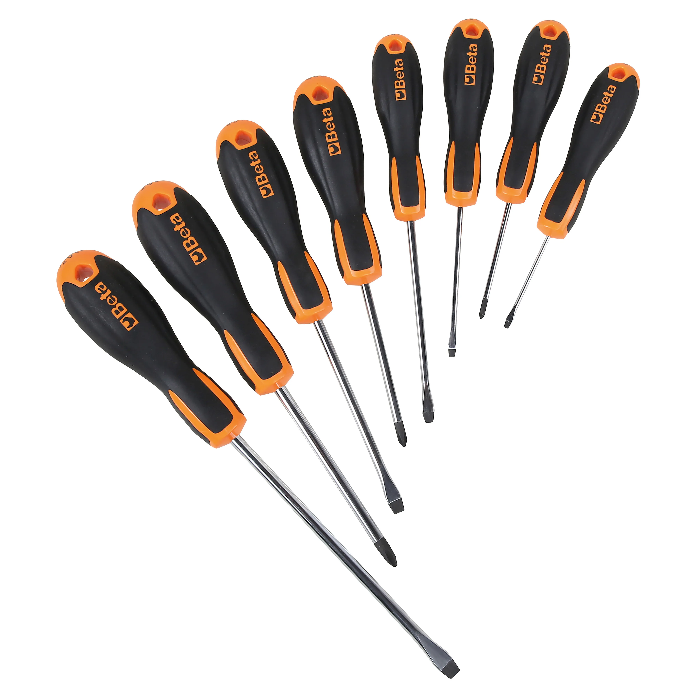

THE TASKS
In the first part, I handled customer service by connecting clients with the department, that could take care of their issue.
The tools I used for this task were a computer and a telephone.
In the second part, I worked on repairing products by disassembling, reassembling, and packaging LED display components.
The tools I used were common tools such as screwdrivers, electric screwdrivers, and packing machines.

Torna alla pagina precedente
Vai alla pagina successiva